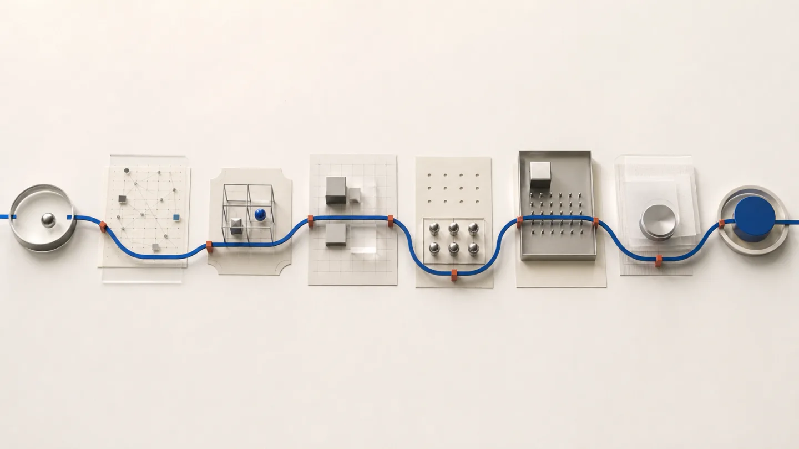

Product formation
Matt
负责产品形成：追问问题、研究事实、制作原型、形成规格与 Tickets；困难调试需要证据才接手，并在任务全部完成后进行整票审查。
Codex 0→1 产品工作流
Zero-to-One Product 连接 Matt Pocock Skills 的产品发现能力与 Superpowers 的工程执行能力。它不是另一套独立方法，而是负责记住状态、判断阶段、把下一步交给正确主流程的外层路由。
IdeaFirst usable version
一个外层流程所有者持续保存阶段与决策
17 个精确依赖来自两套经过验证的上游能力
每阶段一个主流程避免同类方法互相争夺控制权
为什么需要路由
产品发现和工程交付需要不同的思考方式。路由器在阶段边界上做选择：上游问题由 Matt 流程澄清；进入实现后，再由 Superpowers 接管计划、测试、验证与收尾。
入口分类器
三个入口回答同一个问题：此刻需要多少背景调查，才能开始可靠地定义产品。
从想法本身开始，集中追问目标、用户与边界。
grill-me
先读取现有资料，再围绕文档与代码中的事实追问。
grill-with-docs
先建立地图，识别系统边界、风险与值得深入的区域。
wayfinder
固定阶段路线
Router 会根据已有证据恢复到最靠后的未完成阶段，而不是每次重新 brainstorming。已有规格、Tickets、测试与审查结果都会成为下一次接续的坐标。

把模糊想法压缩成可回答的用户、目标与边界问题。
grill-me / grill-with-docs
Matt
先建立项目地图，再决定哪些区域值得深入。
wayfinder
Matt
用可信来源消除会改变产品方向的事实缺口。
research
Matt
用最小原型回答最昂贵、最关键的设计问题。
prototype
Matt
把已验证的产品判断写成可验收的整体规格。
to-spec
Matt
沿用户价值纵向切片，让每票都能独立验收。
to-tickets
Matt
核对 Git、状态文件与权限门，再准许工程接管。
zero-to-one-product
Router
在独立 worktree 中保护主分支与现有工作。
using-git-worktrees
Superpowers
只把当前一票拆成可验证的技术任务与文件改动。
writing-plans
Superpowers
让每个任务依次通过实现、规格与质量审查。
zero-to-one-product
Router
在任务链结束后，按整票目标审视完整差异。
code-review
Matt
用新鲜测试、构建与检查结果证明交付成立。
verification-before-completion
Superpowers
在明确选择后合并、提交 PR 或保留工作区。
finishing-a-development-branch
Superpowers
职责地图
角色边界用名称、线型与位置重复编码；颜色只用来加强识别。
Product formation
负责产品形成：追问问题、研究事实、制作原型、形成规格与 Tickets；困难调试需要证据才接手，并在任务全部完成后进行整票审查。
State and gates
负责入口分类、证据恢复、Git gate 与权限边界；编排有界执行，并在每票与每阶段完成时接收阶段交还。
Engineering delivery
负责工作区隔离、单票技术计划、TDD、常规调试与逐项任务审查；随后提供完成证据，并完成分支收尾。
安全边界
下面不是建议清单，而是组合工作流保持可预测、可恢复、可审计的硬边界。
同一阶段只有一个主流程。产品发现阶段不使用 Superpowers brainstorming；正式编码只使用 Superpowers test-driven-development。禁止调用 Matt tdd，禁止调用 Matt implement。
systematic-debugging 负责常规调试。只有在出现间歇性、性能相关、难复现或无法解决等明确升级证据时，才升级到 diagnosing-bugs；两个调试流程不得同时运行。
自动路由只免除路由确认，不扩大任何权限。以下所有受控操作仍必须逐项经过独立授权门：
范围边界
路由器只拥有新产品从想法到首个可用版本的外层流程。确认超出范围后，立即停止当前路线。
brainstormingsystematic-debuggingcodebase-design